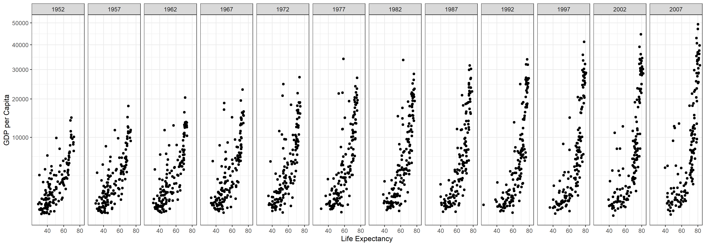
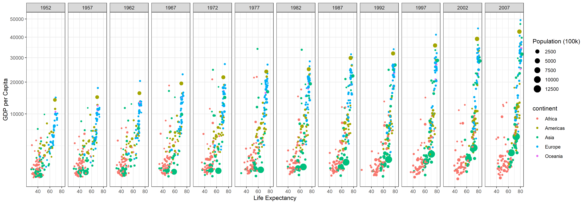

Gapminder Part 1
Reading
Finish reading the rest of Chapter 3: R for Data Science—Visualization
Hans Rosling is one of the most popular data scientists on the web. His original TED talk, The best stats you’ve ever seen set a new bar for data visualization. We are going to create some graphics using his formatted data as our weekly case study.
- Use a
.Rmdfile to recreate the graphic shown below usinggapminderdataset fromlibrary(gapminder)(get them to match as closely as you can).- Remove Kuwait from the data (explanation of why)
- Use
library(tidyverse)to load ggplot2 and dplyr so that you can duplicate the plot below. (Hint: use+ theme_bw()to get the proper formatting) - Use
scale_y_continuous(trans = "sqrt")to get the correct scale on the y-axis. - Use
ggsave()and save the plot as a.png
- Knit the
.Rmdfile. Push your.Rmd,.md,.htmland the.pngof the plot into your git repository.

- Edit the
.Rmdfile created in the pre class task to incorporate population size and continent, as seen below:

Don’t forget that slack is a great place to go if you can’t figure something out. Asking questions in a way that allows people to help you is a skill you can practice in slack and within your groups.
- Knit the updated
.Rmdfile. Push your.Rmd,.md,.htmland the.pngof the plot into your git repository.
Submit
In I-learn submit a link to the .md file on GitHub.